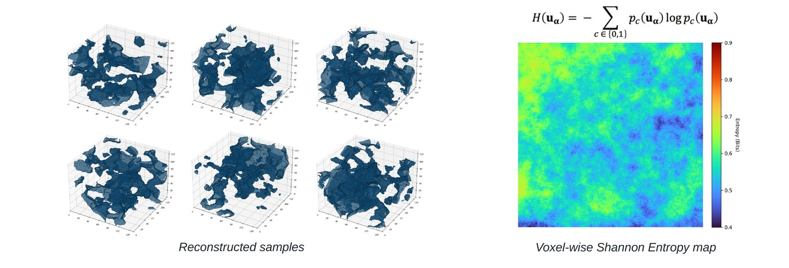

Digital rocks
Latent rectified flow for 3D digital rocks
A 3D VAE + rectified-flow model that generates realistic 3D rock microstructures in about one second per volume on a single GPU, evaluated on porosity, topology, uncertainty, and diversity.
VAERectified flowMicro-CT